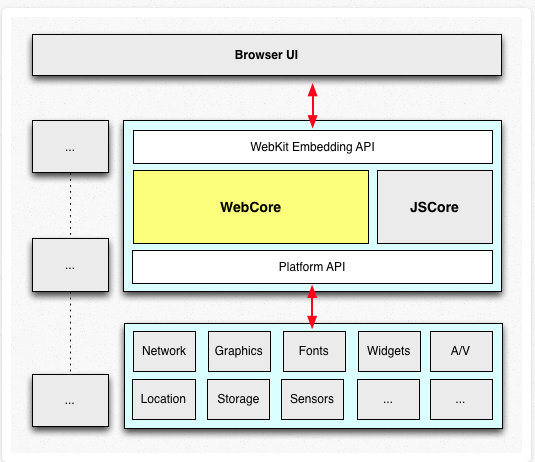
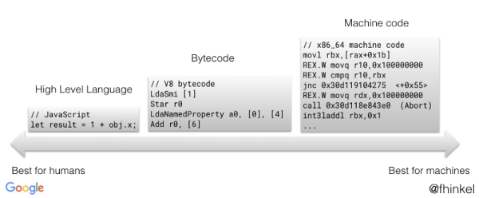
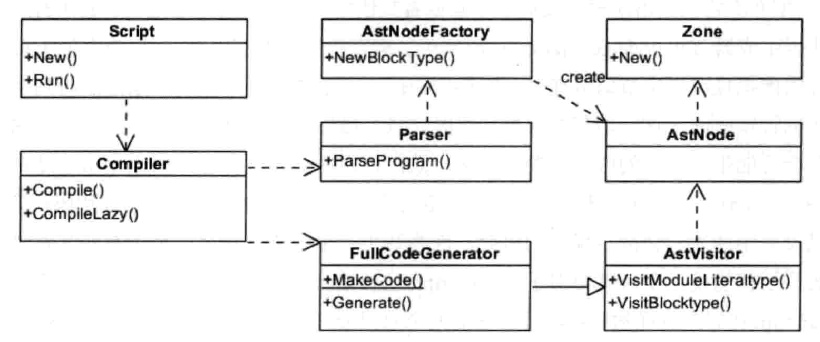
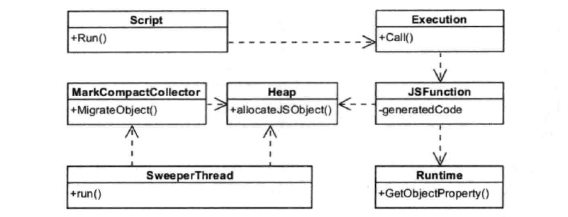
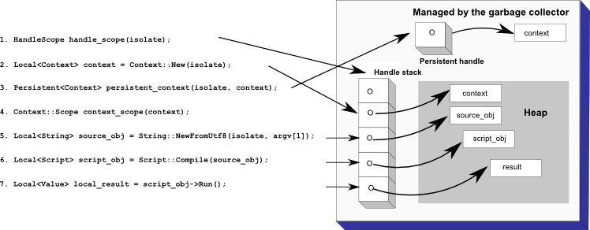
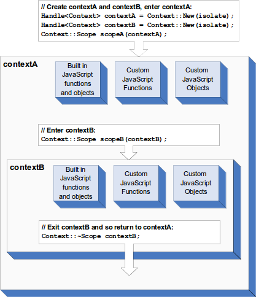

使用node.js也有一段时间了，一直没有深入的研究一下node，这次就对node.js相关的技术，进行从上层到底层的学习，内容包括：
- v8引擎 <=
- libuv
- node.js
libuv的避免不了unix环境编程的api，这一块与node.js有点距离，不放在这个系列中了。
V8简介
背景
v8的背景是webkit内核的浏览器，webkit的架构如下：

这里：
- WebCore 是各个浏览器使用的共享部分，包括HTML解析器、CSS解析器、DOM和SVG等
- JSCore是WebKit的默认引擎，在谷歌系列产品中被替换为V8引擎。Javascript的引擎，或者类比Java的虚拟机
- WebKit Eembedding API是平台差异的,不同的浏览器实现不同
这样就很容易看出V8的定位，解析执行JavaScript语言，JavaScript是一种解释性语言，与C、c++编译型语言不同，以及Java的半编译半解释性语言不同，它需要一遍执行一遍解析。
编译型语言的一般过程： 源代码 –> 抽象语法树 –> 中间表示 –> 机器码
V8的过程: 源代码 –> 抽象语法树 –> 字节码 –> JIT –> 机器码
源代码：
1 | function demo(name) { |
抽象语法树：
字节码:

v8 在5.9版本之前，不生成字节码，直接由抽象语法树经JIT运行，在5.9版本增加了Ignition字节码编译器。这一部分内容参考v8字节码
编译
JavaScript代码编译的过程大致为：
- Script类调用Compiler类的Compile函数为其生成本地代码。
- Compile函数先使用Parser类生成AST(抽象语法树)
- FullCodeGenerator类来生成本地代码。本地代码与具体的硬件平台密切相关，FullCodeGenerator使用多个后端来生成与平台相匹配的本地汇编代码。
- AstVisitor用于遍历AST（访问者模式）

运行
- Script表示JavaScript代码，即包含源代码，又包含编译之后生成的本地代码，即是编译入口，又是运行入口；
- Execution：运行代码的辅组类，包含一些重要函数，如Call函数，它辅组进入和执行Script代码；
- JSFunction：需要执行的JavaScript函数表示类；
- Runtime：运行这些本地代码的辅组类，主要提供运行时所需的辅组函数，如：属性访问、类型转换、编译、算术、位操作、比较、正则表达式等；
- Heap：运行本地代码需要使用的内存堆类；
- MarkCompactCollector：垃圾回收机制的主要实现类，用来标记、清除和整理等基本的垃圾回收过程；
- SweeperThread：负责垃圾回收的线程。

内存管理
- 构成
一个 V8 进程的内存通常由以下几个块构成：
- 新生代内存区（new space）
大多数的对象都会被分配在这里，这个区域很小但是垃圾回收比较频繁； - 老生代内存区（old space）
属于老生代，这里只保存原始数据对象，这些对象没有指向其他对象的指针； - 大对象区（large object space）
这里存放体积超越其他区大小的对象，每个对象有自己的内存，垃圾回收其不会移动大对象区； - 代码区（code space）
代码对象，会被分配在这里。唯一拥有执行权限的内存； - map 区（map space）
存放 Cell 和 Map，每个区域都是存放相同大小的元素，结构简单。
- 生命周期
假设代码中有一个对象 jerry ，这个对象从创建到被销毁，刚好走完了整个生命周期，通常会是这样一个过程：
- 这个对象被分配到了 new space；
- 随着程序的运行，new space 塞满了，gc 开始清理 new space 里的死对象，jerry 因为还处于活跃状态，所以没被清理出去；
- gc 清理了两遍 new space，发现 jerry 依然还活跃着，就把 jerry 移动到了 old space；
- 随着程序的运行，old space 也塞满了，gc 开始清理 old space，这时候发现 jerry 已经没有被引用了，就把 jerry 给清理出去了。
嵌入v8
为什么介绍嵌入v8呢，因为node.js就是嵌入v8的。
基本概念
- isolate： 有自己堆的VM实例
- handle: 指向一个对象的指针，所有的V8对象都可以通过handle来访问
- handle scope: 存放handle的容器，当删除handle scoppe，会自动删除其中的handle,从而也会触发删除v8对象
- context: 可以独立运行JavaScript脚本的可执行环境，要想运行一个JavaScript脚本，必须明确指明其context
细节
Handles
handle是一个指针，指向在heap中JavaScript对象的地址。当这些对象没有被handle指向时，垃圾收集器GC就会回收这些存储。前边提到过，对象在heap中的位置会被GC移动，移动后，GC会更新所有指向这个对象的handle。
最常见的有2种handle：local handle与Persistent handle
local handle存储在一个stack上，这个stack可以认为是前边的handle scope。用Local来定义
Persistent handle也是指向一个在heap上分配的JavaScript对象，但它不在stack上。用UniquePersistent与 Persistent 来定义。 
context
context是一个独立的可执行环境，它其中就包括了JavaScript内置的函数与对象。既然每个context都包含这些内置的函数与对象，加载的过程就比较耗时，v8做了一些优化，第一次创建context时候，会解析创建内置对象的JS代码，并创建对象，以后再创建context就只创建对象，而不再解析JS代码了。并且为第一创建也提供了快照功能，也会加快解析。
你也可以多次进入、退出一个context，也可进入多个context，但只有一个当前的context。
template
模板可以将C++的函数或者数据结构封装进一个JavaScript对象，这样可以再JavaScript中去操作这些对象。 在一个context下，一个template只能有一个实例。
JavaScript有强烈的函数、对象二元性。这也反应在template上。有2种类型的template：
Function template
通过调用template的GetFunction方法，在context中创建一个template的实例。可以将一个C++的回调函数与function template连接，这样当Js实例调用时，触发相应的C++函数。Object template
每一个function template都与一个object template相连。用作配置被function示例化的对象（这里function当做类使用）。可以讲2种c++回调与object template关联。
accessor: 当一个Js对象的指定属性被访问使，触发
interceptor: 当一个Js对象的任意属性被访问时，触发
Security model
同源策略禁止一个origin的script访问另外一个origin的script的属性（数据）。origin在此指的是域名(www.example.com)、协议(https)、端口的结合。这3个相同，才可以认为是同源。
在V8中，“origin”被定义为context。默认禁止从任何一个context中访问另外一个context。既然默认禁止，那就有不默认的方式来访问。如果要从一个context访问另外一个context，就需要使用security token。可以在创建context时通过setSecurityToken手动创建，或者v8自动生成一个。当然时，v8的安全系统会检查调用者的token与被调用者的token，如果匹配，就允许访问，反之，就进一个回调来判断是否允许。Exception
当一个脚本执行不成功，V8返回空句柄。所以在继续执行之前，必须检查返回值是否是空句柄。
想要捕获异常，使用TryCatch，例如：1
2
3
4
5
6
7
8TryCatch trycatch(isolate);
Local<Value> v = script->Run();
if (v.IsEmpty()) {
Local<Value> exception = trycatch.Exception();
String::Utf8Value exception_str(exception);
printf("Exception: %s\n", *exception_str);
// ...
}这种方式有点像unix，通过返回值标识是否错误，通过主动get错误信息来打印。
示例
官方给出3个示例，这里给出process这里示例的地址:
process.cc
js脚本
这个示例实现的是，统计访问host的个数，progess函数通过js来实现，保存在全局对象中，通过以下代码讲Js的函数引用到C++ process_对象中
1 | Local<String> process_name = |
然后，写了一个Process函数，来调用，这个Process函数有些像代理一样
1 | const int argc = 1; |
以上可以认为是C++调用JavaScript的函数，另外还有JavaScript使用C++的数据对象。
既然是计数，最好的方式就是map，这里C++的实现就是用的Map来实现。然后将Map封装到全局的template下，就可以在脚本中直接使用该对象了。(原代码封装了2个对象,opts与output)
1 | bool JsHttpRequestProcessor::InstallMaps(map<string, string>* opts, |
Js中使用output1
2
3
4
5
6
7
8
9
10
11function Process(request) {
if (options.verbose) {
log("Processing " + request.host + request.path +
" from " + request.referrer + "@" + request.userAgent);
}
if (!output[request.host]) {
output[request.host] = 1;
} else {
output[request.host]++
}
}